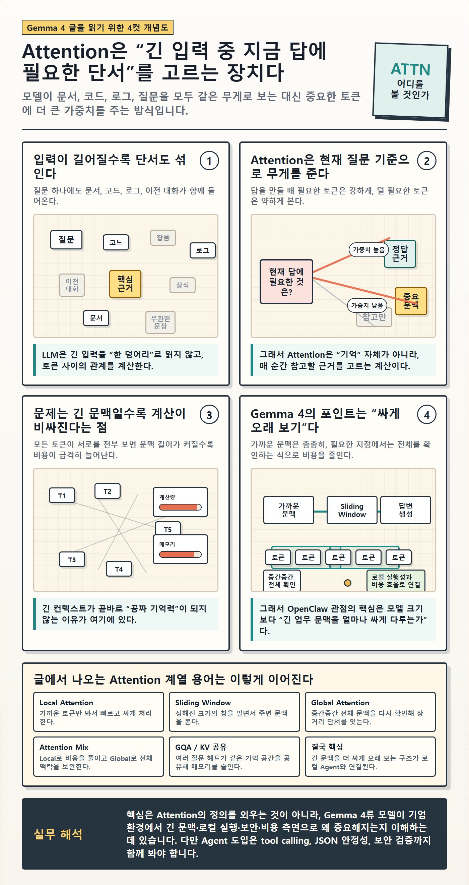

Gemma 4 글을 이해하기 위한 Attention 4컷 정리

**AI > Easy Concept** | 2026.05
>
**이 글의 본문은 아래 4컷 인포그래픽입니다.** 스크롤을 더 내리기 전에 한 번 천천히 읽어 주세요.
>
글은 인포그래픽을 보충하는 짧은 부연일 뿐입니다.

60초 멘탈 모델: 회의에서 "아까 그 부분"
회의 중에 누군가 "아까 그 부분 다시 한번 설명해주실래요?"라고 묻습니다. 우리는 회의 첫 발언부터 머릿속에서 처음으로 되감지 않습니다. "그 부분" 근처만 강하게 떠올리고 나머지는 흐릿하게 둡니다.
LLM(글을 만들어주는 큰 AI 모델, Large Language Model)이 일하는 방식도 비슷합니다. 그리고 그 "지금 필요한 부분에 더 큰 비중을 두는 구조"의 이름이 Attention입니다.
위 인포그래픽 4컷이 이 한 문장을 그림으로 풀어 놓은 것입니다.
4컷 짧은 부연
1컷 — 입력이 길어질수록 단서도 섞입니다. 질문 하나에도 문서, 코드, 로그, 이전 대화, 정책이 함께 들어옵니다. 토큰(token, 모델이 한 번에 다루는 글자 묶음) 1만 개 중 답에 결정적인 토큰은 수십~수백 개뿐입니다. 나머지는 배경입니다.
2컷 — Attention은 "지금 답에 필요한" 토큰에 가중치를 줍니다. 정답 근거에는 높은 가중치, 중요 문맥은 낮게, 무관한 토큰은 거의 무시. 그래서 Attention은 "기억 장치"라기보다 "선택 장치"에 가깝습니다.
3컷 — 문제는, 긴 입력일수록 계산이 비싸진다는 점입니다. Transformer(Attention 구조를 처음 제안한 모델 아키텍처)의 기본 형태에서는 입력이 2배 길어지면 계산량은 4배가 됩니다. 긴 컨텍스트가 곧 공짜 기억력이 아닌 이유입니다.
4컷 — Gemma 4의 포인트는 "싸게 오래 보기"입니다. 가까운 토큰은 촘촘히, 먼 토큰은 필요한 지점에서만 전체로 보는 구조(Sliding Window 등)로 비용을 줄입니다. 그래서 핵심은 모델 크기 자체가 아니라 "긴 업무 문맥을 얼마나 싸게 다루는가"입니다.
인포그래픽 하단 용어 박스 풀이
인포그래픽 맨 아래 "글에서 나오는 Attention 계열 용어" 6개를 한 번 더 풀어 둡니다.
| 용어 | 풀이 |
|---|---|
| Local Attention | 가까운 토큰만 봐서 빠르고 싸게 처리합니다 |
| Sliding Window | 정해진 크기의 창을 밀면서 주변 문맥만 봅니다 |
| Global Attention | 중간중간 전체 문맥을 다시 확인해 장거리 단서를 잇습니다 |
| Attention Mix | Local로 비용을 줄이고 Global로 전체 맥락을 보완합니다 |
| GQA / KV 공유 | 여러 질문 헤드가 같은 기억 공간을 공유해 메모리를 줄입니다 |
| 결국 핵심 | 긴 문맥을 더 싸게 오래 보는 구조가 로컬 Agent와 직결됩니다 |
Gemma 4 관련 글에서 이 단어들이 등장하면 "Attention 비용을 줄이려고 하는 시도"라고 한 줄로 묶어서 보면 됩니다.
회사 환경에서 이게 왜 의미 있는가
Gemma 4 같은 작은 LLM 시리즈가 효율적인 Attention 구조를 가지면 회사 환경에서 세 가지가 가능해집니다.
| 항목 | 작은 LLM이 더 효율적이면 가능해지는 것 |
|---|---|
| 로컬 실행성 | 사내 GPU나 노트북에서 직접 돌릴 수 있습니다 |
| 비용 통제 | 글 한 편당, 응답 한 번당 호출 비용이 줄어듭니다 |
| 내부 데이터 처리 | 사내 데이터를 외부로 안 보내고 처리할 수 있습니다 |
벤치마크 점수보다 이 세 가지가 회사 도입 결정에서 더 중요합니다.
단, Attention 효율 하나로 모든 게 풀리진 않습니다
Gemma 4가 Attention을 효율적으로 다룬다고 해서 바로 회사 Agent(LLM이 도구를 반복적으로 호출하며 일하는 형태)에 투입할 수 있다는 뜻은 아닙니다. 실제 도입에서는 다음 항목들도 같이 봐야 합니다.
- 도구 호출(tool calling, 모델이 외부 도구를 부르는 기능)이 안정적인가 — 도구 이름과 인자를 일관되게 만드는가
- JSON 같은 정해진 형식의 출력이 일관된가
- 사내 데이터 접근 권한이 분리되는가
- 평가 체계와 장애 시 대체 경로(fallback)가 있는가
한 줄 정리
Attention은 LLM이 긴 입력 중 지금 답에 필요한 부분을 더 강하게 참고하는 구조이고, Gemma 4 같은 작은 LLM의 방향성은 이 Attention 비용을 줄여 "긴 문맥을 더 싸게 오래 보는 것"입니다. 회사 입장에서는 모델 크기보다 로컬 실행성·비용·내부 데이터 처리 가능성이 진짜 의사결정 지점입니다.
참고
- Google DeepMind — Gemma 4 모델 카드 / 공식 페이지
- "Attention Is All You Need" (Transformer 원논문, 2017)
- Stanford CS336 — Language Models from Scratch (2026)
- PyTorch / Hugging Face의 attention 최적화 문서